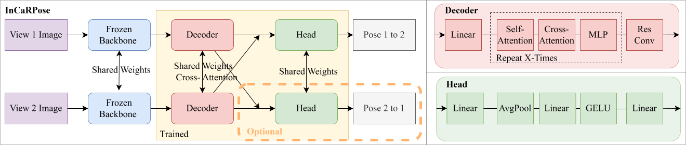

Visualization of relative pose estimation in real-world automotive cabin environments (blue=GT,green=InCaRPose).
Camera extrinsic calibration is a fundamental task in computer vision. However, precise relative pose estimation in constrained, highly-distorted environments, such as in-cabin automotive monitoring (ICAM), remains challenging. We present InCaRPose, a Transformer-based architecture designed for robust relative pose prediction between image pairs, which can be used for camera extrinsic calibration. By leveraging frozen backbone features like DINO and a Transformer-based decoder, our model effectively captures the geometric relationship between a refer- ence and target view. Unlike traditional methods, our approach achieves absolute metric scale translation, which is critical for ICAM. In doing so, we specifically address the challenges of highly distorted fisheye cameras in automotive interiors by training exclusively on synthetic data. Our model is capable of strong generalization to real-world cabin environments without having the same camera intrinsics. Additionally, it achieves competitive performance on the 7-Scenes dataset. Despite having limited training data, InCaRPose maintains high precision in both rotation and translation, even with a small ViT-S backbone. This enables real-time performance for time-critical inference. We are publishing our real-world In-Car-Pose dataset, which covers highly distorted images of vehicle interiors.

We provide the In-Cabin-Pose-dataset, designed for evaluating relative pose estimation models in highly distorted, constrained automotive interior environments. The dataset includes fisheye reference–target image pairs along with ground‑truth relative rotation and translation to the reference frame. Ground-truth is avaiable by ArUco and COLMAP.